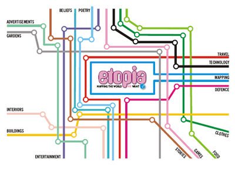

What Works Where? Workshop
Etopia | Workshop | Programme | Resources | Past | Present | Future | Etopia E-Journal | World Ecitizens
THE PRESENT : World Ecitizens
{kind=link}
Stage Two: 2008
Selected publications that are essential reading for full participation in the
WWW workshop publication which will be presenting new knowledge built collaboratively
in the MirandaNet Etopia ejournal.
Building Etopia here: an e-community of practice for learners of all
ages
In this draft of Building Etopia Here I have analysed the ways in which
I learnt about the uses of computers from my early years. I have then
compared this learning progress with the learning stages I have identified
within the MirandaNet community. The idea is that MirandaNetters at the
WWW event use the framework to compare and contrast their own progress.
We can therefore investigate differences and similarities in experience
of ICT CPD in different countries and cultures.
If you are short of time just read Chapter Two: Framing the Data, which gives you a clearer idea of how the critical incidents, or stories, are used as evidence at each chronological stage
- Building Etopia Here (Word 410KB) (Note: this document might have a corrupt table)
- Timeline Chart (Word 95K)
- MirandaNet Presentation (PowerPoint 2.32MB)
Braided
Learning : augmenting teachers’ learning on line
This is the key strand in new knowledge about how teachers might learn
in an e-mature community of practice. John Cuthell and I have been exploring
how teachers build knowledge online in mature e-communities. This emerging
theory called Braided Learning is based on notions of communal constructivism
developed by MirandaNetters Marilyn Leask, Bryn Holmes and Sarah Younie.
- Augmenting Learning (Word 33KB) (This is a Word version of the text that follows)
The use of online environments and discussion forums
Knowledge construction – the process of understanding and knowing
something – can be seen as the process (and responsibility) of
individual learners. Knowledge construction can also be understood as
a socially-mediated process.
In an online environment and discussion forum:
- the learner has to make explicit the level of schema and concept development in discussing her or his ideas.
- there is a demand placed on the learner to make an explicit comparison of their own schema and those of others.
We can visualise this as an iterative process:
- Individual thought
- Increase in the levels of knowledge
- Social interactions
- Collaboration
Stages of learning in an online community
(Salmon,
2000; Preston, 2004, 2007; Preston & Cuthell, 2007)
| Step 6: Braided Learning | |||||
| Step 5: Development | |||||
| Step 4: Knowledge construction | |||||
| Step 3: Information exchange | |||||
| Step 2: Online socialisation | |||||
| Step 1: Access & motivation | |||||
Step 1: Access & motivation
This first stage is critical to the success of any programme that involves
ICT and an online environment. Participants need to be motivated, and
need to have access to the environment. This access should be as transparent
as possible, with login procedures sufficient to maintain security,
but with ease of access to members. If use of the virtual environment
is difficult, if a number of problems are encountered and if there
is a lack on support, then motivation is reduced.
Step 2: Online socialisation
Online socialisation is enabled by the use of discussion forums, the
structure of a website, with profiles of each participant, and by the
facility to view and exchange photographs, particularly those taken during
face-to-face meetings.
Step 3: Information exchange
This is a key function of a discussion forum linked to a course. Participants
can post questions, receive answers, exchange ideas and share drafts.
Step
4: Knowledge construction
This process enables projects to build into more than the sum of its
component parts and partner contributions. As such it makes an important
contribution to knowledge and practice.
Step 5: Development
The final development of teaching materials, implementation plans and
the project evaluations should all be contained within this stage of
learning. All of the knowledge and processes that form part of a Visual
Learning project create an innovative product that addresses the ICT
learning needs of successful CPD, and the pedagogical structures to support
them.
Step 6: Braided Learning
The final step in the process of learning that is supported by an online
environment occurs when discussions combine to create new knowledge and
awareness for all participants to build on. The participants as professionals
begin to re-purpose these shared texts to influence local national and
international policy agendas. They also begin to create new collaborative
theories.
The following papers, only some of which are available for download, are all © John Cuthell:
Cuthell, J.P. (2005) ‘Beyond collaborative learning. Communal construction of knowledge in an online environment’ (Word 74KB), Proceedings of Web Information Systems and Technologies, INSTICC, pp.529–536.
Cuthell, J.P. (2005) ‘What does it take to be active? Teacher participation in online communities’, International Journal of Web Based Communities, Geneva: Inderscience, Vol. 1, No. 3, pp.320–332.
Cuthell, J.P. (2006) ‘Online forums as learning resources: some case studies from MirandaNet’ (Word 76KB), Proceedings of IADIS International Conference: Web Based Communities, pp.371–375.
Cuthell, J.P. (2006) ‘Steering the supertanker: changing teaching and learning’, in C. Maddux (Ed.) Computers in the Schools: Technology Applications in Education, Binghamton, NY: The Howarth Press, Vol. 23, Nos. 1–2.
Cuthell, J.P. (2008) ‘The role of a web-based community in teacher professional development ’ (Word 149KB), Int. J. Web Based Communities (In press).
Cuthell, J.P. and Preston, C. (2005) ‘Teaching in ICT-rich environments – using e-learning to create a knowledge base for 21st century teachers’, in M. Leask and N. Pachler (Eds.) Learning to Teach Using ICT in the Secondary School, 2nd ed., London: Routledge.
The Following papers are restricted to MirandaNet members:
Cuthell, J. P.; Preston, C. (2007) Braided Learning: Developments In An Online Community Of Practice (Word 57KB). In: Kinshuk, Sampson, D. G., Spector, J. M., Isaias, P. (Eds.), Proceedings Of The IADIS International Conference On Cognition And Exploratory Learning In Digital Age (CELDA 2007) pp.79-84 IADIS Press
Preston, C. (2007) Braided Learning: promoting active professionals in education (Word 163KB). An overview of braided learning theory for online professional working. In: Theories and Models Of Online Learning, Caroline Haythornthwaite with Richard Andrews, Bertram C. Bruce, Michelle M. Kazmer, Rae-Anne Montague & Christina Preston, August 6, 2007. First Monday, Vol 12 No 8 Chicago IL, USA : http://firstmonday.org
Preston, C. (2007 ). Social Networking for Professionals: what is the point? Self-regulated Learning in Technology Enhanced Learning Environments: Individual Learning and Communities of Learners, Amsterdam, Elsevier.
Preston, C. (2008 in press: not yet available for download). "Braided Learning: an emerging practice observed in e-communities of practice" International Journal of Web Based Communities Inderscience Publishers (www.inderscience.com).
Salmon, G. (2002) E-tivities: The Key to Active Online Learning, London: Kogan Page. This paper is not available for download, but you can obtain the full sound track and presentation by Christina Preston of Braided Learning, The Sixth Step, at Leicester University on 23 April 2007 to Gilly Salmon and her colleagues from: http://www.le.ac.uk/beyonddistance/events/pastevents.html
Social Networking: What Can Teachers Learn From Students?
Christina Preston and Paul Vale (draft) (submitted 2008). This Keynote
for a conference in Prague addresses the differences from the point of
view of learning between social networking,
online knowledge construction and the dissemination of new knowledge.
- Restricted to members: Social Networking (Word 562KB)
[Back]